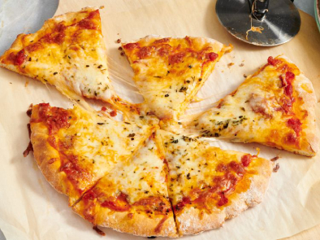

This high-protein pizza dough is a game-changer for quick, healthy homemade pizza nights. Made with self-rising flour, Greek yogurt, and unflavored protein powder, it comes together in minutes with no yeast and no rising time. The result is a soft, chewy crust with crispy edges that holds up well to toppings.